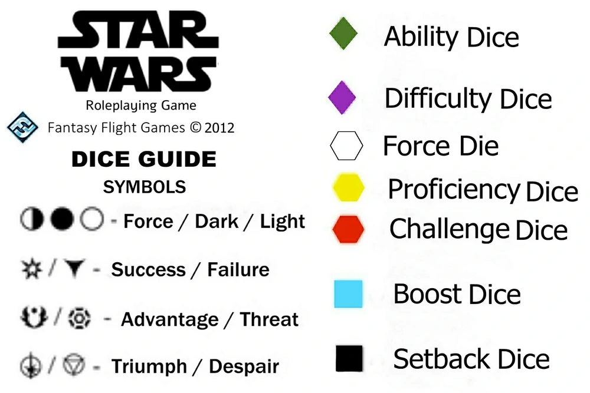

About the game
The Star Wars Roleplaying Game is a tabletop role-playing game
set in the Star Wars universe, first published by Fantasy Flight Games in 2012.
It consists of different standalone cross-compatible games where each one is a separate
themed experience. The sourcebooks support games set from the Clone Wars era to the original
Star Wars trilogy era; there is limited support for the Star Wars sequel trilogy era. Since 2020,
the game line has been maintained by Asmodee's subsidiary Edge Studio.
Following you will find the dice symbols explained. The dice system in Star Wars is kind of different
in the sense that it heavily relies on storytelling. With the symbols showing in which
direction the Force is favored.

The game emphasizes immersive storytelling and character
development, allowing players to become heroes, villains, smugglers, or Jedi knights in thrilling
adventures across the galaxy. FFG's unique narrative dice system adds unpredictability and cinematic
flair to gameplay, enabling collaborative decision-making between players and the game master. Players
can explore iconic planets, engage in space battles, negotiate with factions, and delve into the
complexities of the Force. With a wide array of sourcebooks and supplements covering different eras
in the Star Wars timeline, players have the freedom to craft their own stories or reenact iconic moments
from the films. Overall, Star Wars: The Roleplaying Game offers an engaging and versatile RPG experience
in the beloved Star Wars universe.
.png)